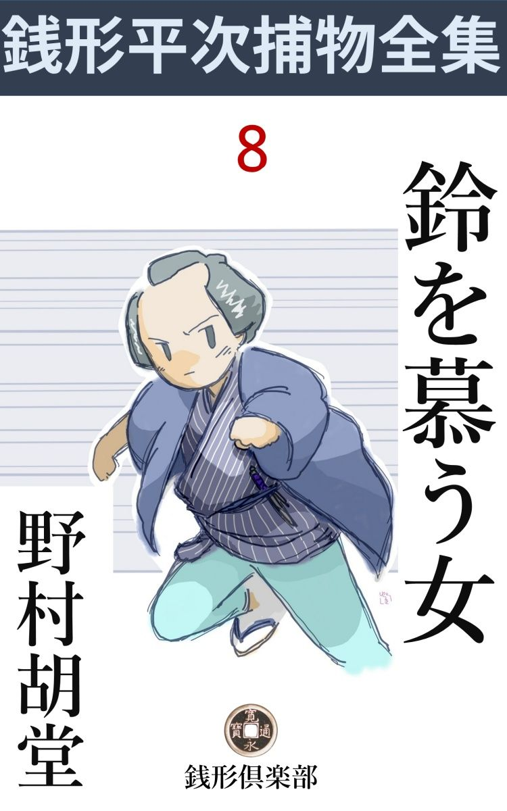
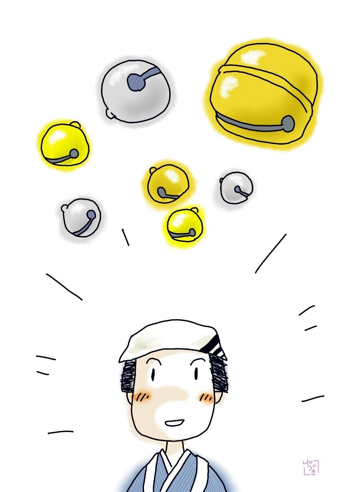

| 鈴を慕う女: 銭形平次捕物全集第８話 (銭形倶楽部) | |
| 野村胡堂 | |
| ZENIGATA CLUB (2018) | |

一
「八、あれを跟 けてみな」
「ヘエ------」
「逃がしちゃならねえ、相手は細くねえぞ」
「あの七つ下りの浪人者ですかい」
「馬鹿ッ、あれはどこかの手習 師匠 で、仏様のような武家だ。俺の言うのは、その先へ行く娘のことだ」
「へエ------、あの美しい新造 が曲者なんですかい。驚いたな」
「静かに物を言え、人が聞いてるぜ」
銭形の平次と子分のガラッ八は、その頃繁昌した、下谷の徳蔵稲荷 に参詣するつもりで、まだ朝のうちの広徳寺 前を、上野の方へ辿 っておりました。
「ガラッ八、よく見て置くんだよ、心得のために話して置くが------」
「ヘエ------」
平次は一段と声を落しました。
「武家はちょいと怖 い顔をしているが、よくよく見ると顔の造作の刻みが深いというだけのことで、まことに人相に毒がねえ、------牙 のある獣 に角がなく、角のある獣に牙がねえのと同じ理窟 で、あんな怖い顔をした人間は、十中八九は心持のいいものだ。ところが本当の悪党とか、腹の黒い人間というものは、思いの外ノッペリした顔をしているものだよ。見るがいい、あの武家の袂 の先には、ここからでも見える位、朱が付いてるだろう、あれが手習師匠の証拠だ。子供の手習を直す時朱 硯 に袂の先が入ったんだろう」
「ヘエ------、するとあの美しい娘が悪人てえ証拠は？」
「あの娘と摺れ違った時見ると、袖の先に同じように赤いものが付いてるが、それは朱じゃなくて血だ。それにあの娘は広徳寺前で、袂から泥 焼 のお狐樣を落しだろう」
「それは、あっしも見ましたよ。あれは徳蔵稲荷の門前で売っていますね、素焼のお狐に泥 絵具 を塗って、一つが十二文。あれは懐中 へ忍ばせて置くと、願事が叶 うとか言って、手弄 みをする手合がよく持っていますが------」
「それだよ、そのお狐を若い女が袖に忍ばせているのも可笑 しいが、何かの機 みで落っことすと、乾き切った往来の上で尻尾が欠 けた。------この通り」
平次は何時の間に拾ったか、内懐から尻尾の欠けた素焼
の狐を出して見せました。
「何時の間に拾いなすったんで、早業だね、親分は？」
「馬鹿、静かに物を言え、往来の人が顔を見るじゃないか、------ところで、女が物を落すと、どんなに忙しい時でも大抵踏 み止 って一応は拾い上げるものだ。そして、役にも立たないことだが------毀 れたものなら、元の通り継 いでみるとか何とか、どんなにつまらない物でも、それ位の未練は持っているものだ。ところがあの娘はどうだ」
「お狐を落 として、尻尾が欠けると、ちょいと振り向いたっきり、拾い上げようともせずにサッサと行って仕舞った------成程、こいつは可笑しいや」
「解ったか、八。あの女は馬鹿か豪傑か、でなければ腹の中に容易でない屈託 があるんだ。それも並大抵のことではない、女が願事が叶うという禁呪 のおコンコン様を捨てて行くのは容易じゃない」
平次の明察は、すっかりガラッ八を景気付けました。
「ね、親分。この仕事を私に任 しちゃ下さいませんか」
「何だと」
「八五郎の手柄初めに、根こそぎ洗い出してみましょう」
「大丈夫か、ガラッ八」
「大丈夫かは心細いな」
「------」
「第一、あんな吹けば飛ぶような新造を、銭形の平次親分とその一の子分の八五郎とで跟けたとあっちゃ、世間の聞えもよくねえ」
「それもそうだな。万に一つの間違いはあるまいが、あの娘を見失っちゃならねえよ。俺は徳蔵稲荷へ行って、お前の帰って来るのを待っているから」
「有難てえ。それじゃ任 せて下さるんだね、親分」
「ドジを踏むな、相手が綺麗な新造だと思うと間違いだぞ」
「だ、大丈夫------」
ガラッ八は平手を額にかざすと、平次に別れて娘の後を追いました。
二
平次が徳蔵稲荷へ行って見ると、果 して思いもよらぬ大事件が待ち構えておりました。
神様にも流行 廃 りで、今は跡形 もありませんが、その頃大変流行った徳蔵稲荷の門前は、何があったのか、朝から黒山の人だかりです。ハッと思うと早足になって、人混みを分けるともなく顔を出すと、
「アッ、銭形の親分、丁度いいところで」
町の口利 らしいのが、顔見知りと見えて、袖を引かぬばかりに案内してくれます。
「どうなすったんです。これは？」
「大変な間違いがありましたよ、あれを見てやって下さい」
指したのは、ささやかな玉垣の下。
「あッ、これはひどい」
銭形の平次も思わず声を立てました。
人の死体や、残酷 な場面は、嫌いだといっても随分沢山見て来た平次ですが、まだ、こんな変ったのは見たこともありません。
真新しい紅白の鈴の緒 で縛り上げられた中年者の男が、二た突き三突き、匕首 で剌 されて、見るも無慙 な死にようをしているのです。
「銭形の親分、この通りだ。これは堂守の仁三郎といって、町内の人気者だ。人に怨 を買う性 の人間じゃない、金を溜めるような心掛の男でもねえ、それがこんな虐 たらしい有様になって、朝詣りの人に見付かったんだ。何とか敵を討ってやって下さい」
「へエ------、大変な事をする奴もあるものですね。玉垣の前で堂守を殺すなんて、随分罰 の当った話じゃありませんか」
平次はそう言いながら、一と通り死体を検べましたが、四十五六の巌乗 な男で、女や予供に縛られそうな柄 ではありません。朝といっても日中 の事ではあり、多分当身 か何か食わされて、一度目を廻したのを鈴の緒で縛り上げられ、後で気が付いて口を利こうとしたので、匕首 で盲目 突きにされたものでしょう。
もっともまだ人通りも少ない時分で、死体は玉垣の横手の方にあったのですから、夜が明けたといっても一と刻 や半刻は、知らずに過 せば過せないこともありません。何人目かの朝詣りの人が、拝殿に下っている鈴の緒が引千切れているのに気が付いて急に騒ぎ出すと、間もなく玉垣の横、一寸人目に付かないところに、堂守 の死体が転がっているのが見付けられたのです。
役人の見える前に、平次は忙しく四方を探しましたが、賽銭箱の上に下っている大きな鈴と、その鈴に付いた紅白の鈴の緒が千切り取られているほかには、何の変ったところもありません。賽銭 泥というのは、何時の世にもあったもので、器用なのは鳥黐 で釣り、荒っぽいのは箱を打ちこわすのですが、見たところ、そんな様子は少しもありません。
「ハテ------」
銭形平次ほどの者も、思案に余って双腕 を拱 きました。
そのうちに、徳蔵稲荷の前は弥次馬で一パイ。
「仁三郎が殺されたとよ」
「あんな仏様みてえな人間を殺す奴は、どんな野郎だろう」
「それに玉垣迄血で穢 してよ、罰 の当った畜生じゃないか。お稲荷様だって黙っちゃいなさるめえ」
こんな噂を平次はジッ卜聴いておりました。この事件には、余程深い奥がありそうです。やがて平次は、門前の土産物屋へ行っていろいろ尋ねて見ましたが、朝詣りの客は土産物などに眼をくれないので、ツイ今し方表戸を開けたばかり、何にも知らないという心細い有様です。
「十八九の美しい新造が、この禁呪 のお狐を買って行かなかったかえ」
「ヘエ、そんな事もありましたでしょうが、何分毎日二三十ずつ売れるお狐さまですから、はっきり覚えちゃいません。場所柄で芸妓衆や水茶屋の姐さん方がよくお買いになりますよ」
土産 物屋のお神さんの記憶 は甚だ心細いものです。
三
「ちょいと、お兄 イさん」
不意に、本当に不意に娘は立ち止りました。お屋敷風とも町家風とも付かぬ、十八九の賢そうな瓜実顔 、どこかお侠 なところはありますが、育ちは良いらしく、相応に美しくも可愛らしくもあるうちに何となく品があります。
「------」
不意討を喰らって、ガラッ八は往来の真ん中に立ち辣 みました。秋が深いにしても、朝の光の中に欝 陶 しく頬冠り、唐桟 を端折って、左 の拳 で弥造 をきめた恰好は、どう贔屓目 に見ても、あまり結構な風俗ではありません。
「私の家はここよ、後を跟けて来たんならもうお帰り」
「ヘエ------」
「何て間抜な狼 だろう」
「あッ」
虹のような啖呵 を、ポカンとしている向う額 に浴びせて、娘は路地の中へ颯 と消えてしまいました。あまりの鮮 やかさに、暫くは後を追うことも忘れて、娘の言葉を噛みしめるように、ガラッ八は立ち止りましたが、
「あッ、いけねえ」
路地へ飛込んだがもういけません。中は羊腸 たる抜け裏、娘の姿は本当に虹のように蒸発してしまったのでした。
「畜生め」
大きく舌打を一つ、折角引受けた大仕事を縮尻 ってしまって、面目次第もなく、朝の元の大通りヘバアと出ると、丁度通りかかったのは先程の武家、------親分の平次が手習師匠に見立てた五十前後の浪人者です。
「この武家を跟 けてやれ、新造の尻を追い廻すよりは、気がとがめないだけでもいい」
勝手な独り言を言いながら、少しやり過して、件 の七つ下りの羊羮色 浪人の後から跟け始めました。それから大通りを暫く行って、路地を二つ三つ曲ると、とある路地の中へ。
「どっこい、今度は逃さねえぞ」
浪人者の踵 を踏むように続いて入ろうとすると、今度もまた見付かってしまいました。
「これこれ町人」
「ヘエ、ヘエ」
「先程から拙者の後を跟けておるようだが、何か用事でもあるのかな」
「飛んでもない」
「剽盗 泥棒ならあきらめて帰るがよかろう。この通り無禄 の浪人者だ、一文も持合せがない。その上年こそ取っておるが、拙者は腕が出来ておるぜ。ハッハッハッハッ」
カンラカラカラと笑い飛ばすと、刻 みの深い物凄い顔の紐 が緩 んで、群青 で描いたような青 髯 の跡までが愛嬌になります。
「ヘエ、あっし は悪い人間じゃ御座いません」
「そうだろう。その方の人相は、どう買い被 っても悪人という相じゃない。鼻が反 くり返って、眼尻が下がって、歯が少し乱杭 だな。そんな刻みの深い顔は、総て善人か愚人 にあるものじゃ」
「ヘエ------」
「悪人はもう少しノッペリして凄味 があるな」
ガラッ八、もうすっかり面喰らってしまいました。
「親分もそんな事を申しましたよ、あのお武家は、一寸凄い顔をしているが、きっと仏様のような方に相違ないって------」
「仏様は少し嫌だな、まあいい。ところで何の用事で拙者の後を跟けた、返答によっては許さんぞ」
「決して旦那の後を跟けたわけじゃ御座いません。先刻 旦那の前へ行った、あの綺麗な新造が、どこへ行くかと思って、ちょいと、その------」
「馬鹿野郎」
「ヘエ------」
「お前のような馬鹿がおるから、若い娘が一人歩きも出来ないのだ。今日だけは見逃してやる、さっさと帰れ」
「ヘエ------」
ガラッ八は全く散々な敗北でした。二三町スッ飛んで、浪人者が路地の中へ消えるのを持って、近所の酒屋で聞いて見ると、白川鉄之助という九州辺の浪人者で、大した金持という訳ではありませんが、生活 には困らないらしく、別に仕官の途を求めるでもなく、毎日ブラリブラリと遊んでいるということでした。
「あの浪人者は、手習 子 を集めて、師匠をしているでしょうね」
「いいえ、そんな話は聞きませんよ。身寄も知辺もない一人者で、時々ブラリと外へ出る外は、珍 糞 漢 糞 な本ばかり読んでますよ」
「しめたッ」
ガラッ八は、それだけ聞くと、横っ飛に徳蔵 稲荷 へ駆け付けました。娘を見失ったのは、何と言っても大 失 策 に相違違ありませんが、その代り、あの浪人者を手習師匠と鑑定 した、親分平次の失策も掴んだのです。これなら五分と五分------いや七分と三分位かも知れませんが、兎に角、親分のお小言も緩和 されるだろうと思ったのです。
徳蔵稲荷の前へ帰って来ると、黒山の人だかり。
「ハイヨハイヨ」
弥次馬を別けて入 って見ると、玉垣 の下、紅白の鈴の緒で縛 られた堂守の死体を前に、銭形平次は腕を拱 いて考えているところでした。
「親分、これはどうした事です」
「おお、八か。あの娘はどうした」
「入谷まで跟けて行ったんですが、恐ろしい八幡の藪知らずの抜け道へ入り込んで、到頭消えっちまいましたよ」
「何？ 見失った？ 馬鹿野郎ッ」
「その代り親分、あの浪人者は手習師匠でないってことまで突き留めて来ましたぜ」
「そんな事を誰が頼んだ、馬鹿ッ。向うへ行ってしまえ」
「ヘエ」
ガラッ八は、まことに滅茶滅茶です。
四
徳蔵稲荷の堂守 殺しは、それっきり下手人 が判りませんでした。銭形平次は身一つに引受けて、いろいろ探索 の手を費 しましたが、何としても解りません。
仁三郎は全くの一人者で、金も係累 も、人に怨を買う覚 えもなく、その上、賽銭 箱が無事で、取られた物といっては、拝殿の鈴 だけ。これも仁三郎を縛るために、鈴の緒を引千切った時、一緒に転げ落ちたのを、その儘誰か拾って猫ばばをきめ込んだのかもわかりません。
しかしこの時代の迷信深い弥次馬が、お稲荷棣の拝殿の鈴を隠すというのも受取れないことです。
さては、鈴を盜むためであったか------
フト平次はそんな事を考えました。しかし、社の拝殿の鈴などは、迷信的な気持に逆 らってまで盜むほどの物ではなく、第一小さい社はすっかり荒れてしまって、最近一手に寄進する金持があって、改造に取かかる手筈にまでなっていたのですから、古い鈴などは、その時は自然新しいのと替えられるでしょうし、手順を踏 んで頼めば、随分安く手に入らないとは限りません。どう考えても、人を殺してまで奪るほどのものではなかったのです。
それにつけても、あの娘を逃したのは、何という手ぬかりでしょう。子分思いの平次もこの時ばかりは、ガラッ八に半日も物を言いませんでした。袖の尖端 に血のついた娘------それも、間違いなくこの境内から出た女の行方を、つまらない手違いから見失ってしまったというのは、何としたドジでしょう。
最後に残る手段は、鈴の行方を調べることです。平次はその日のうちに、あらゆる子分を狩集めて、界隈の古道具屋や堂宮を聞かせました。
「親分の鑑識 は曇らねえ、確かにありますぜ」
第一に飛び込んで来たのはガラッ八。
「何があったんだ」
と平次、さすがに腰が上がります。
「近頃下谷中の古道具屋から、鈴を買い集めた者があるって言いますぜ」
「本当か、八」
「本当か------は情けねえ、この足で歩いて、この耳で聞いたんだ。間違いっこはねえ、その上、堂宮の拝殿の鈴がチョイチョイ盜まれる」
「何だと」
「親分、こりゃどこかに鈴を集めて謀叛 でも企 む奴があるに違 げえねえ------」
「馬鹿だなお前 は、鈴 が鉄砲玉の代りになるかよ------ところで、その鈴を買いに歩くのは男か女か」
「男も女も、武家も、町人もあるってことですよ」
「何時頃から始まったことなんだ」
「なんでも半年ばかり前からボツボツあった事だが、激しくなったのは、この二三日だってことですよ」
「よし、それで解った。八」
「ヘエ------」
「手前、何時でも、親分のためなら命を投げ出すと言ったね」
平次は少し屹 となります。
「言いましたとも。憚 りながら小判形の八五郎、金や命に糸目は付けねえ」
「糸目を付けたくも、金なんか持っちゃいめえ」
「図星 ッ、親分のめがねは曇らねえな」
「幸い命だけは一つ持っているだろう、そいつをちょいと貸してくれ」
「お安い御用だ、他所行 のですか、それとも平常 使いのですか」
「馬鹿だな、お前は」
すべてこう言った調子ですが、昔の江戸ッ子は、こうした警句のために、自分の命位は何とも思わずに賭 けました。
「誰にも言っちゃならねえよ、俺達の知り合いから出来るだけ鈴を集めるんだ、------それから、熊や三公にそう言って、まだ手の届かねえ場末から鈴を集めさせ、それを背負 って、手前 暫く鈴を売って歩くんだ」
「そんな事なら何でもありゃしません、やりますとも」
「血眼で鈴を探している奴は、鈴で釣るより外に術 はねえ」
「解りましたよ、親分。鈴でも半鐘 でも売って歩きますよ」
物事を単純に考えるガラッ八は、もうすっかり成功したつもりで飛出してしまいました。
五
その翌る日、八五郎はすっかり鈴屋になり済して、入谷から根岸の方へ流しておりました。万筋 の野暮ったい袷 に、手甲 脚絆 をつけ、置手拭までした恰好は、誰に教ったか知りませんが、すっかり行商人の板についております。肩から小鈴の箱を飴屋さんに掛けて、両手には、大きい鈴を、新しいのと古いのとを取交ぜて、五つ六つずつ提 げました。

「------エー、鈴はいりませんか、大きいのは拝殿の鈴から、小さいのは鋏 の鈴、腰下げからポックリの鈴------新らしいのもある、古いのもある。金の鈴、銀の鈴、真鍮 の鈴、銅 の鈴------、足結 の鈴、手の鈴、釧 の鈴、大刀の鈴、鈴 鏡 。さては犬の鈴、鷹 の鈴、凡そ鈴と名の付くものなら何でもある------鈴は要りませんかな------」
ガラッ八は時々懐 を覗いて、仮名 で書いて貰った口上書を弁慶 読みにしながら、こう言った声を張り上げました。
猫の蚤取 りさえ触れ歩いた時代ですから、鈴売りなどは決して珍らしいものではありません。
「チョイと、鈴屋さん」
八五郎は時々呼び止められて、猫の子の鈴、鋏 みの鈴などを売りましたが、徳蔵稲荷で盜まれたような、大きな鈴は誰も振り向いてはくれません。
翌る日、ガラッ八は根岸の奥へ入 り込んでおりました。すっかりもう板について、懷を覗かなくともスラスラと口上も言えるし、元手 かまわずの鈴も相当売れますから、何だったら、この儘足を洗って、鈴売りになるのも悪くない------といったような暢気 な気持になっておりました。
「エー、鈴屋で御座い。鈴はいりませんかな、手の鈴、足結 の鈴、釧 の鈴------」
と張り上げていると、
「ちょいと、鈴屋さん」
大家 の寮 の裏手らしい黒板塀 の潜りが開いて、若い女が小手招ぎをしております。
「ヘエヘエ」
「御新造様が鈴を御覧になりたいと仰しゃるよ、ちょいとここから入っておくれ」
「ヘエヘエ」
誘 われる儘に、ヒョイと庭に入ると、後ろの潜戸はピシリと締められましたが、その機 みに振り返って見ると、呼込んだ娘というのは、三四日前、広徳寺前から跟けて、入谷で首尾よく撒 かれた、あの袖の先に血の付いた袷を着ていた娘だったのです。
「あッ」
ガラッ八は、思わず声を出しましたが、庭石に躓 いたような振りをして誤魔化 しました。様子はすっかり変っているし、手拭は吉原冠りにしているし、多分俺とは気が付くめえ------といった、相変らずガラッ八流の楽天的な心持で、娘の後に跟いて、寮の庭を廻りました。
「御新造様、鈴屋を呼んで参りました」
障子の中へ声を掛ける。
「御苦労だったね、八重」
優しく応 えて、秋の朝日の這いよる障子を開けたのは、二十二三とも見える、少し病身らしいが、恐ろしい芙人。ガラッ八も吉原冠りの手拭を取って、思わずヒョイとお辞儀をしてしまいました。
眉の跡 青々 と妙に淋しく細 そりしておりますが、水際立った元 禄 姿 で、敷居の上に桜貝のような素足の爪を並べて立つと、腰から上へ真珠 色 の霞 が棚 びいて、雲の上から美妙な声が聞えるといった心持、ガラッ八は一ペンに降参してしまいました。
「下町にはいるそうだが、この辺へ鈴屋が来るのは珍らしいね。どんな品があるか、皆な見せておくれ、気に入りさえすれば、幾 箇 でも買って上げるから」
「ヘエ------」
唖然 としていたガラッ八は、漸 く人心地が付くと、そそくさと鈴の箱を開けました。
しかしこの時、燈 籠 の蔭、木戸の後ろ、縁側の隅などに、幾人かの人間が、餌 に狙い寄る猛獣のように、眼を輝やかしているのに、八五郎少しも気が付かなかったのです。
箱の中の鈴と、手に持った鈴と、洗いざらい縁側に並べると、八五郎を案内した美しい女中は手を挙げて合図しました。
「それッ」
四方から飛出したのは、悉 く女。女中、小間使、お針、飯炊き、あらゆる種類を尽して、八五郎の八方からサッと飛びかかります。
「あッ、何をする」'
と言ったが追い付きません。女と思って甘くあしらっている内に、風呂敷を被 せて、帯 紐 で縛ってその儘、物をも言わず奥へ担ぎ込みます。
六
ガラッ八は出かけてから、もう三日帰りませんでした。銭形平次、さすがに放 っても置けません。
与力の笹野新三郎を訪 ねて訊くと、石原の利助は堂守殺しの下手人として、徳蔵稲荷の隣に住んでいる、やくざ者の仙吉を挙げたという話。これは賭博 の元手に困って、仁三郎の財 布 を狙ったものと見たわけです。
仁三郎の臍繰 ------そんなものが若しあったとしたら、ろくに鍵 も錠 もない、仁三郎の部屋へ忍び込んで、何とかして奪 るのが本当で、賽銭箱 の上に登らなければ取れない鈴の緒を引千切って、玉垣 の下へ死体を投り出して置くというのは、あまりに念入りな頭の悪さです。
「そんな筈は御座いません。下手人は思いもよらぬ大物でしょう」
平次はそう言って与力の役宅を出ましたが、さて、大きい口を利いたものの、手繰 って行く手蔓 が一つもありません。
念のために下谷へ引返して、徳蔵稲荷の氏子 総代 ------和泉屋という町内の酒屋の主人に逢って訊いてみると、思いも寄らぬ新事実が挙 りました。
それは、徳蔵稲荷の建物はひどく古くなったので、最近堀留 の穀物 問屋で、諸藩のお金御用も勤め苗字 帯刀 まで許されている、大川屋孫三郎が、全然新しく建てて寄進することになり、材木まで用意して、来春早々工事に取かかる運びにまでなっているというのです。
それだけなら何でもありませんが、その上、古い堂宇 は、信心のため孫三郎が申受け、御本尊を除 いた一切の附 属 品 と共に、根岸の寮の広い庭に移して、その儘祀 ろうという事に決っているという話なのです。
「賽銭箱から鈴の緒まで新しいのと代えて下さるそうで、氏子一同大喜びで御座います。それにつけても、こんなに荒れたままで大川屋さんに差上げては、いくら何でもお気の毒だからと申して、玉垣と鳥居を塗った序 に、木連 格子 だけは紅殻 で塗って置きました。その矢先あの騒ぎで、本当に私共まで、どんなに迷惑したかわかりません。親分のお力で一日も早く下手人が捕まるように------と、氏子 一同そう申しております」
和泉屋の主人の話を聞くと、平次の真っ暗な胸には、サッと一道の光明が射しました。
「有難う御座いました、いろいろ解りました。稲荷様の罰 ということもありますから、そのうちには下手人も判りましょう。お喧 しゅう------」
和泉屋を飛出した平次は、その足ですぐ根岸の大川屋の寮を目当てに行きました。まさかガラッ八の真似をして鈴屋になって出かけるわけにも行きません。岡っ引にしては少し手堅 い平常着 の儘、先ず四町四方もあろうかと思うような板塀の外をグルリと一と廻りしてみました。
近所で聞いてみると、大川屋の主人というのは、働き盛りの四十男ですが、早く配偶 を失い、先年吉原で馴染を重ねた華魁 を請出 して、親類の承諾 を得て後添に直しました。これが不思議と心掛の良い女で、美しくも優しくもあったのですが、何分の病身、堀留 の本宅に置くわけにも行かず、根岸にこんな立派な寮を建てて、女手に飽かして住わしてあるのだということでした。
その女は、お米といって、不思議に鈴の音を愛し、長い間買い集めて家の中は鈴だらけ、召使を呼ぶにも食事を知らせるにも、一々鈴を鳴らすのだと聞いて、平次はすっかり有頂天になりました。
門を入って耳を澄ますと、成程秋の空気に響 いて、どこからともかく、床 しい鈴の音が聞えて来ます。
「これだこれだ」
平次は独り言を言いながら、寮の玄関にかかりました。
七
寮 の玄関には、大きい鈴がブラ下がっておりました。その頃では珍らしい試みで、成程『鈴屋敷』だと思いながら、二つ三つガランガランとやると、玄関の障子が滑 らかに開いて、
「何誰 様で------」
首をかしげたのは、忘れもしないガラッ八に跟けさした娘。成程桃色の啖呵 は切りそうなお侠 な娘です。
「あッ、お前さんは矢張り此家 の人か」
「------」
娘はサッと顔色を変えて、その儘障子を締めそうにするのを、
「どっこい待った。俺はお上の御用を聞いている平次という者だが、お前さんには徳蔵稲荷の仁三郎殺しの疑いがかかっている。変なことをしちゃ反 ってためにならねえ、黙って主人に取次いで、どうして鈴を集めたか、仔細を話して明 を立てなきゃア、どんな事になるか判らないぜ」
平次の態度には、商売柄にも似ぬ、噛んで含 めるような物優しさがありました。娘はハッと顔を伏せましたが、思い定めた様子で、
「暫くお待ち下さいまし」
静かに奥へ消えます。
やがて通されたのは、さまで広くはありませんが、妙に小綺麗に片付いた寮の奥座敷、待つ間もなく、
「お待たせいたしました。銭形の親分さんだそうで、丁度いい方にお目にかかりました。私は大川屋の配偶 で、米と申します」
敷居際で静かに挨拶したのは、最早名妓 といった俤 はありませんが、如何にも洗練 された美しい女房振りです。
「面倒な駈引 は抜にして、早速承 わりますが、手前共の八五郎という男------、鈴売に身をやつして参った筈で御座いますが、あれはどうなりました」
平次の調子は、平淡なうちにも一歩も仮借 せぬ厳しさがありました。
「ハ、ハイ、あの方は、身分を仰しゃいませんので、全く敵の廻し者と思い込み、しばらくこの寮へ留まって頂きました」
「そうでしょう、------いやそう打明けて仰しゃって下さると大変私もお話を申上げよくなります。ところで、その次に伺いたいのは徳蔵稲荷の鈴の事ですが、あれは一体どうなりました」
平次の言葉は直ちに問題の核心 に触れて行きます。
「あれは少しも存じません。先程お取次に出ました、召使の八重と申す娘に、朝夕あの鈴を見張りながら、お詣りをさせて置きましたが、あの日行って見ると、鈴は紅 白 の緒 ごと引千切られ、玉垣の下には、鈴の緒で縛られた死骸があったと申します。八重は気丈な娘で御座いますから、もしやと思って死骸の近所を探したそうですが、鈴は矢張り無かったそうで御座います。その時袂 の先を少し血潮で汚 したとか言っておりました」
お米の答は明快を極めました。眉の跡の青々とした明眸の女主人 は、さすが昔の全盛を偲 ばせて、年にも柄にも似合わぬ頭のよさがあったのです。
「そうでしょう。------あの娘 に鈴の緒を千切れるわけもなく、気が強いといっても仁三郎を殺せる筈もありません。最初往来で摺れ違った時は、袂の血を見て吃驚しましたが、仁三郎の死体を見て、これは女子供の仕業でないとわかりましたよ。お蔭で大分眼鼻が付いて参りました」
こう言う平次の態度や言葉は、その人柄のように慇懃 で、世の常の岡っ引とはあまりに違っておりました。最初は多少警戒的な気持で話していたお米も、次第に信頼しきる心持になって、
「それから、どんな事を申上げれば宜しいでしょう？」
ツイこう言ってみるのでした。
「たったこれだけの事を打明けて下さい。どうして、こんなに沢山の鈴を集めなすったか------、この鈴は何になさるつもりか。それから、八五郎を敵の廻し者と間違えたと仰しゃったが、その敵というのは誰か、それだけを聞けば、私の用事は済みます」
「ハイ、決して隠し立てはいたしません、何もかも申上げます。父が生きておれば、どんな事があっても口外の出来ないことですが、今ではもう昔話になりました」
お米は思い入った風情にこう申しました。
八
お米の父というのは、芳村道之丞という切 支 丹 侍 で島原の残党。一揆 が事を起す前に七人の同志と江戸に潜行 し将軍御膝元で事を挙げるつもりでしたが、島原の乱も案外早く平定し、徳川の礎 はいよいよ鞏固 で、痩浪人の策動ではどうにもならないと解ると、七人の同志と相談して、チリヂリバラバラになり、芳村道之丞はその中心人物として、長い間一味の連絡 に当っておりました。
その後、天草で習ったオランダ風の錺 を応用して、精巧 な鈴を作ることを工夫し、芳村道斎と名乗って江戸中の好事 家 の人気を集めましたが、名人 業 であまりお宝にはならず、年中貧乏を看板に、女房一人、娘一人を養って事足れりとしておりました。
女房お綾 が死んだ後は、その唯一の形見の金 簪 を鋳込 んで大きい鈴を作り、自分の仕事部屋に掛けて、朝夕清澄な音を楽しんでおりましたが、或る夜賊が入って、芳村道斎を斬った上、あらゆる鈴を盗んで行ってしまいました。
翌る日まで生きていた道斎は重い手傷にも屈 せず『敵は河井竜之介、敵は河井竜之介』と言い続けて命を落しました。
河井竜之介というのは、日頃父道斎と懇意 にしていたこれも西国の浪人者で、多分父道斎が、島原の残党七人の連絡係をつとめ、その所名前書を持っているのを知って、奪い取ろうとしたのでしょう。島原の残党七人の所名前が判れば、強請 っても訴人しても相当の金になったのです。
一人残された娘のお米は、悪者の手に掛って吉原に身を沈め、生来の美しさと賢 さで、一時は全盛を謳 われましたが、縁あって大川屋孫三郎に落籍 され、今は何不自由なく暮しているものの、どういうものか身体が楽になると反って気が弱って、昔父道斎の作った美しい鈴の音が忘れられません。
夫孫三郎の許しを受け、金に飽かして新古いろいろの鈴を買い集め、その中から、道 斎 銘 のを探し出して楽しみにしておりましたが、不思議なことに、母の金 簪 を鋳込 んだ、父の最後の傑 作 が見えません。
段々詮議しているうちに、誰の手を経てどうして売られたか、その鈴は徳蔵稲荷の拝殿にあることを見付け、鈴だけ所望するのも、稲荷様を騙 すようで気がさすので、社殿 を全部寄進する代り、古い祠 を何もかも申受け、この根岸の寮に移して、拝殿に掛けた父の最後の傑作------玲瓏 たる名鈴の音に、朝夕親しむつもりだったのです。
「こんなわけで御座います。親分、父親の作った鈴の音を慕う私の心持をお察し下さいまし」
長物語をおわったお米は、物悲しそうに平次の顔を振り仰ぐばかりでした。
九
「親分、これからどうなるんでしょうね」
とガラッ八。
「俺にも解らねえ、二日でも、女護の島みたいな寮 に引止められていたんだから、手前 も少しは知恵が付いたろう。何とかこの先を考えてみな」
「チェッ、雁字 がらめにされて、納戸 に投 り込まれていたんですぜ。あんな恐ろしい女護ガ島ってあるわけのもんじゃねえ、あの肥っちょの飯炊 がまた恐ろしい力で」
「こぼすなよ、八」
銭形の平次と八五郎は、こんな事を言いながら、根岸の奥の寮を引上げました。
入谷まで来ると、何を考えたか、平次は卒然として往来に立停ります。
「八ッ、手前あの浪人者は手習師匠じゃねえと言ったっけな」
「何ですって？」
「あの騒ぎのあった朝、広徳寺前で逢って、お前が跟 けて行った武家だよ」
「へ、ヘッ、千慮 の一失って講釈 師 は言いますぜ。あの時ばかりは親分の鑑識 も曇ったね」
「つまらねえ事を言うな------こうっと、あの浪人者が手習師匠でないとすると、あの袖の赤いのは朱じゃなくて紅 殻 だ」
「ヘエ------」
「徳蔵稲荷の木連 格子 は、紅殻 を塗ったばかりだって、和泉屋の亭主は言ったね、------あの拝殿の鈴を毮 り取るのは、賽 銭 箱 の上に登らなきゃならねえが、足元が悪いから、鈴を取るとダラリと行く、塗り立ての木連格子に、袖や袂位は強く触 るだろうじゃないか」
「成 る------」
「それに、大川屋の御新造は、父親を殺した河井竜之介というのは、生きておれば五十を越した筈で青 髯 の凄まじい、一寸怖い顔をした男だと言った」
「ヘエ------？」 。
「さア、来い、ガラッ八。手前にとっちゃ怪我の功名だ、その浪人者の家へ案内しろ」
「親分、こうお出でなせえ」
十
二人は宙 を飛んで白川鉄之助と名乗った浪人者の長屋へ駆付けました。ソッと格子から覗くと、家の中は鈴だらけ、主人の鉄之助は、障子に漏 るる秋の陽の中にいい心持そうに昼寝をしております。
「今日は、今日は、御免下さい」
八五郎が格子を開けると、
「河井竜之介、御用ッ」
銭形平次が飛込むと一緒でした。浪人者はさすがに身だしなみで、引付けてある一刀を引抜き、
「何をッ」
真向から向って来るのを迎えて、ピュッ、ピュッと、平次得意の投げ銭。一箇は刀を抜く拳 を打ち、一箇は眉間をしたたかに打ちました。
「あッ」
とたじろぐところを、折重なって、犇々 と縛り上げます。ガラッ八も人柄相応に馬鹿力があるので、こんな時は存外役に立つのでした。
河井竜之介の首は、間もなく鈴が森に梟 されました。
堂宮 の鈴を盗み歩いたのは、自分が道斎を殺した時盗んで売った鈴の中に、島原の残党の所名前が書いてあることに気が付いたためでしたが、お白 洲 でそんな事を申立てても、もう上役人も相手にしてはくれません。一つは河井竜之介の家から没収 した鈴に、そんな所名前などを書いたのは一つもなかったからでもあります。
もっとも、徳蔵稲荷から盗んだ鈴だけは、そっと銭形平次の手から、お米の手へ返してやりました。その鈴を二つに割ると中には細々 と何やら書いてありましたが、平次は素よりそんなものを読もうともしなかったのです。
後日その事について、与力の笹野新三郎に訊かれた時、平次はケロリとして、
「今頃島原の残 党 が、二人や三人ヨボヨボになって江戸にいることを詮 索 したところで、何の足しになりましょう。それより大事なことをお耳に入れて置きますが、河井竜之介を捕えた手柄 は、この平次ではなくて、ガラッ八の野郎で御座いますよ。あの男はなかなか馬鹿じゃ御座いません、お序 の時褒めてやって下さいまし」
こんな事を言っておりました。
（編注）
作品中には、身体の障害や人権にかかわる、差別的な語句や表現が見られますが、本書が成立した当時の時代背景等が現代とは異なる古典的な文学作品でもあり、著者が故人でもありますので、底本のままとしました。ご理解、ご諒承のほどをお願い申し上げます。
本編の初出時の表題は「鈴を恋う女」です。
著者---野村胡堂
挿絵---萩 柚月 © 2017
初出---「文藝春秋オール讀物號」昭和六年十一月号 文藝春秋社
底本---「錢形平次捕物全集」第一巻 河出書房 昭和三十一年五月五日初版
編集・発行 銭形倶楽部